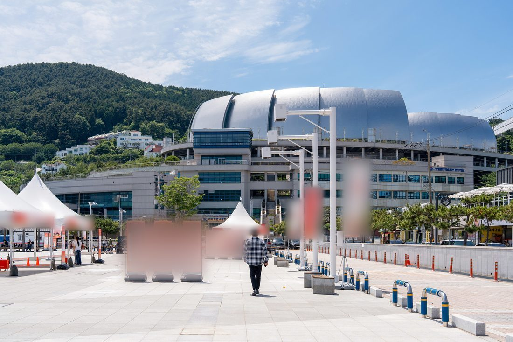
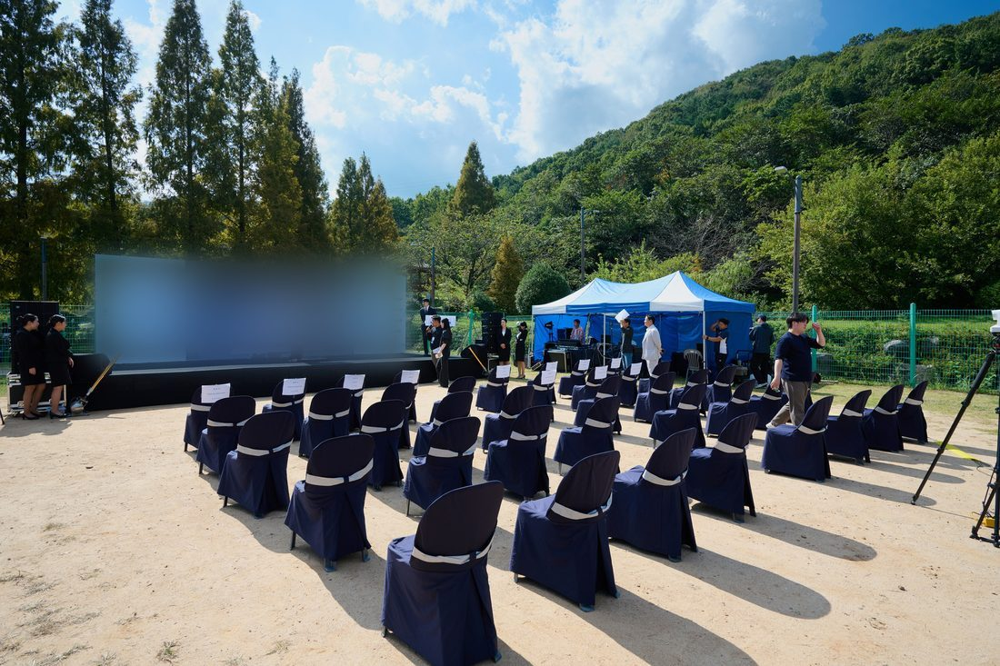
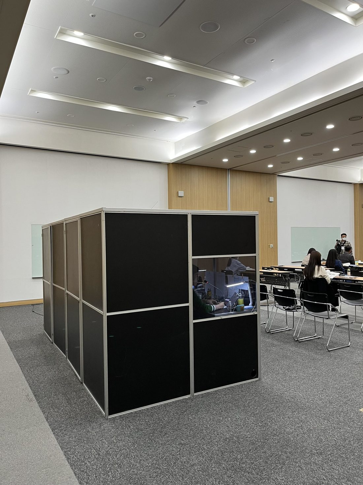
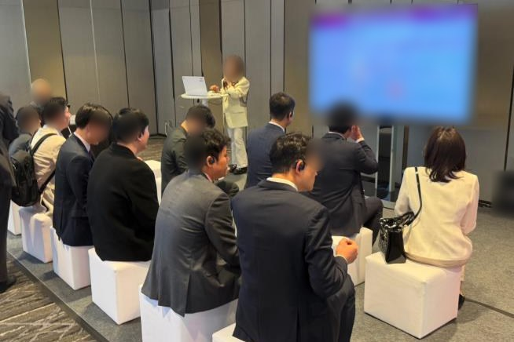
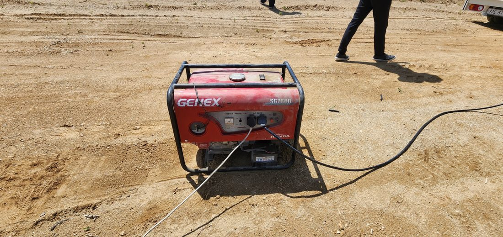

행사 텐트
부스용 캐노피 텐트와 넓은 그늘을 만드는 몽골 텐트를 행사장 배치에 맞춰 세우고, 바람에 대비해 단단히 고정합니다.
- 잘 맞는 행사
- 축제·플리마켓 부스, 체육대회 본부석·휴게 공간, 야외 기념식
- 운영 방식
- 배치도를 기준으로 크기와 수량 산정
- 웨이트·팩으로 바닥 고정
- 강풍 예보 때 설치·철수 기준 사전 협의

부스용 캐노피 텐트와 넓은 그늘을 만드는 몽골 텐트를 행사장 배치에 맞춰 세우고, 바람에 대비해 단단히 고정합니다.

객석, 식사, 등록 데스크에 필요한 테이블과 의자를 좌석 배치 방식에 맞춰 준비하고 행사 전에 깔아 둡니다.

국제회의와 포럼에서 통역사가 들어가 일할 동시통역 부스를 회의장 뒤편에 설치합니다.

가이드의 목소리를 참가자 귀에 바로 전하는 블루투스 무선 송수신기를 빌려 드립니다. 투어·견학 가이드용으로도, 국제회의 통역 수신기로도 씁니다.

전기가 없거나 부족한 야외 행사장에 필요한 전기 용량을 계산해 발전기와 배선을 준비합니다.
필요한 것만 골라 맡기셔도 됩니다.
준비 방법은 행사 물품 렌탈 체크리스트에서 볼 수 있습니다.